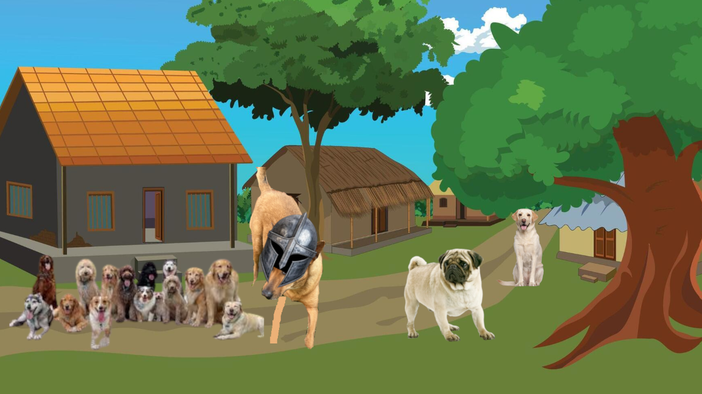
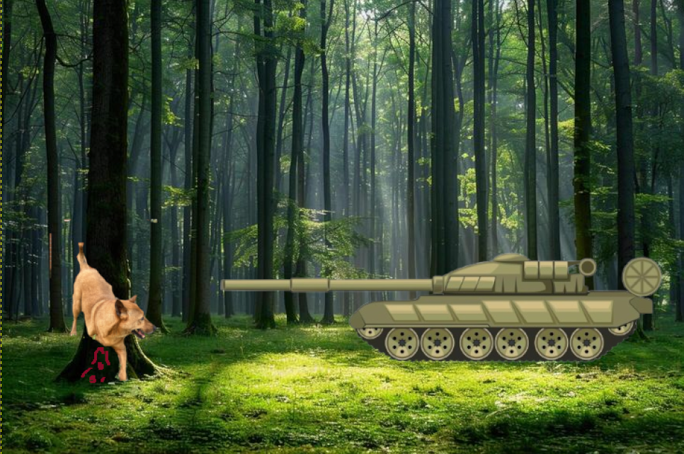
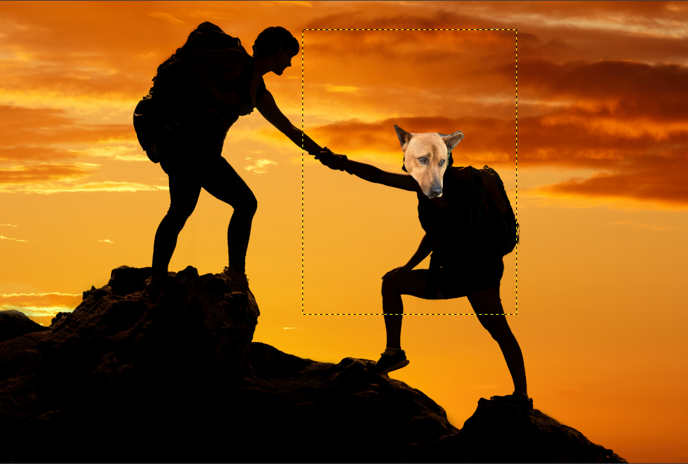

Sonny
Sonny
My dog:Yolk
A long time ago, there was a peaceful village beside a deep green forest. Life there was quiet most of the time, but every so often, robbers would come from the woods and try to steal from the villagers.
To protect everyone, there was a hero dog named Yolk. He was strong, fast, and well known throughout the village. People trusted him because he always stood his ground when danger appeared.

One day, while Yolk was exploring near the forest, robbers attacked unexpectedly. Even though he fought bravely to protect nearby villagers, he was badly injured and lost one of his arms in the battle. The robbers were driven away, but Yolk could no longer continue as a protector. After that, he retired.
As time passed, the village slowly moved on. New guards replaced him, and fewer people remembered the hero who once saved them. Yolk, once admired by everyone, became lonely and had no place to call home.

But during his quiet wandering days, Yolk changed. He realized that being strong wasn’t the only thing that mattered—being kind, gentle, and caring was just as important, maybe even more.
